Алексей и Алексеевич
( Посольск, Мысовая, Ново-Снежная )
-26-28 июля 2008 -
Из серии "Мемуары. Лето-2008"
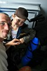 Отпуск
продолжается. Погостил день или два в Улан-Удэ у родственников и чуть
не помер от жары. Сын уже больше месяца бегает в одних трусах на даче
у бабушек. На даче еще терпеть можно, но в городе - и душно, и пыльно,
и солнце жжот. Побывал в новом магазине Триал-Спорт, пообщался с Климовым
Сергеем, он там директор :) В разговоре узнал, что завтра, в пятницу,
на берегу Байкала возле Посольского монастыря, открывается музыкальный
фестиваль "Байкальские Волны" (или что-то вроде этого) . А самое-то
главное, что там же рядом, на Посольском Соре будут тусоваться улан-удэнские
кайтеры, и если их хорошо попросить, то они дадут попробовать КАЙТ !!!
:) Так что перспектива на длижайшие дни нарисовалась. Кидаю в рюкзак гидрокостюм,
наматываю на раму велосипеда толстый-толстый слой поролона и сажу на него
Андрея Алексеевича (мужик большой, 6 лет уже, любит плавать в спасжилете
и в маске с трубкой, а также баловаться газовой горелкой в палатке :)
26.07.2008. Утренняя электричка, дачников море, стоим
в тамбуре. Остановка Большая Речка, рядом одноименный поселок. У местных
узнаем дорогу до Посольска и вперед, наматывать 12 километров. В дороге
понимаем, что жара и духота остались в пыльном Улан-Удэ, а здесь все иначе
- дождь и ветер, и чем ближе к Байкалу, тем сильнее и холоднее. Вот такой
вот сюрприз на все входные! Шторм по полной программе!
 ..
.. 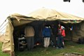
.. 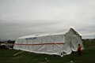
.. 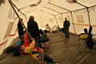
При встречном ветре кое-как доехали до Байкала. Фестиваль
вроде тут - сцена, две армейские брезентовые палатки, одна МЧС-овская
большая и много обычных палаток, и люди разные ходят. Кайтеров пока не
видно, да и пока не до них, после дороги надо бы переодеться в сухое и
согреться. Люди добрые пригласили в МЧС-овскую палатку, которая была основным
убежищем попавшего в шторм фестиваля. Ну и мы тут временно приютились,
переоделись, сварили на горелке покушать. Ну и начали фестивалить :) а
чего еще делать ?! Ветер такой, что не то что палатку ставить, а как бы
поставленные не сдуло! Люди рассказали, что когда шторм начался - половина
палаток сразу улетела :) А у еще одной МЧС-овской большой палатки не выдержали
дуги и ее сложило, и многие опасались, как бы эту вторую не положило.
В связи с природным катаклизмом большая часть фестивального люда собралась
и уехала, потому как прогноз на близайшие дни солнце не обещал, а только
ветер и дождь. Оставшиеся организаторы и им сочувствующие проводили кое-какие
прослушивания (естественно под завывания ветра :) и согревались у костра
и из бутылки. А мы с Андрюшкой на все это с выпученными глазами взирали
- "Куда мы попали?!" :)))
Хорошо, что кайтеры приехали. Дима Красиков, знакомый по
мамайскому фрирайду и баргузинскому экспедишину, приехал с друзьями на
машинах. Они остановились на конце косы и там поднимали в небо разноцветные
кайты, и были реально круты, гоняя по штормовым байкальским волнам на
досках!!! Это даже были не просто покатушки, а серьезная борьба со стихией!
Кайтеры прыгали на волнах, падали, тонули, всплывали, вставали, снова
мчались и прыгали дальше. Иногда их доски отрывало с ногами и они уплывали
в никуда! (нет, все таки без ног, преувеличил я :) Хотя при нас одну доску
бегали искали по всему берегу, не знаю, нашли или нет. В общем, первое
впечатление от кайтов и от кайтеров было сильное и жгучее! Очень хотелось
попробовать! И бывалые дяденьки конечно же дали бы попробовать это чудо
буржуйских технологий с незнакомыми лэйблами, но не в такой же ветер!
Тут и бывалых дяденек самым маленьким кайтом так дергало ветром, что они
как зайчики скакали :) Короче, я даже и просить не стал, так просто поспрашивал
чего-каво, посмотрел и пофотал. Андрюшке тоже кайты понравились, спрашивал,
когда я ему маленький кайтик куплю?
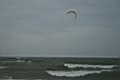
.. 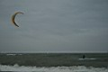
.. 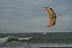
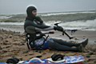
.. 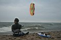
.. 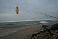
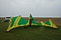
.. 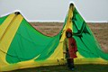
.. 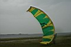
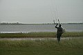
.. 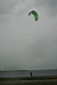
.. 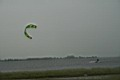
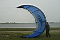
.. 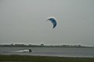
.. 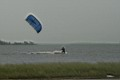
К вечеру ветер немного стал утихать, удалось поставить палатку.
Точнее даже не палатку - из тента и подручных материалов (рейки, веревки,
камни) соорудил неплохое убежище от дождя и ветра, и даже с видом на монастырские
стены! Эксперимент удался:) и пусть в процессе долгого строительства сердобольные
тетеньки говорили, что ничего у меня не получится, а милиционеры, охранявшие
фестивальное добро в УАЗике, предлагали ночевать в их опустевшей палатке,
но я остался верен свему девизу - "Мы легких путей не ищем!".
А Андрюшке было пофигу где и как ночевать, лишь бы горелку зажигать :)
Единственный минус всех моих экспериментов с тентами и полиэтиленами -
это конденсат, а в остальном все прикольно :)
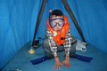
.. 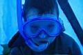
.. 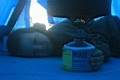
.. 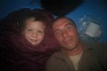
Вечером фестивальный концерт проводили где-то в Посольском
клубе, но мы туда не поехали, а поехали мы на базу МЧС. Правда не к спасателям
спасаться, а к "Байкальскому Экстриму" в гости, Сергей и Оксана
учили детей в рамках проекта "Школа
летнего экстрима" и в общем-то сами были в гостях у спасов:)
Переночевали нормально, под шум волн, хлопатание тента на
ветру и дождливую дробь. Ну еще конденсат сверху капал, но это ерунда,
все вещи еще с утра были влажные.
27.07.2008. Суббота прошла в наблюдении за хмурым
Байкалом, спокойными чайками, неугомонными кайтерами. Несостоявшийся фестваль
отступил под натиском стихии, оставив на берегу сцену в виде большой парусной
лодки. Монастырский колокол изредка просыпался и подавал голос. Вечером
на горизонте пробивались красные солнечные лучи.
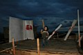
.. 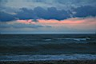
28.07.2008. Воскресение. Утром стало ясно, что солнце
будет. И оно нас догнало по дороге из Посольска в Большую Речку. На электричке
доехали до Мысовой. Там выбрались на берег, развели костер, сварили обед,
полазали по маяку. И на вечерней электричке поехали до Выдрино и в Ново-Снежную.
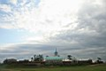
.. 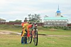
.. 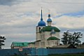
.. 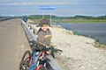
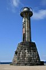
.. 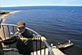
.. 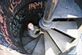
.. 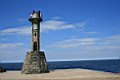
29.07.09. И еще немного фото из Ново-Снежной...
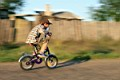
. 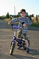
.
.
. 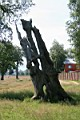
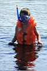
. 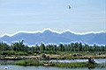
. 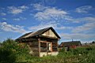
. 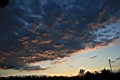
PS: кайты бывают разные - черные, белые, красные... А еще
бывают кайты летние и зимние... А еще для сильного ветра надо маленький
кайт, для слабого ветра надо большой кайт... В общем не все так просто,
и не все йогурты одинаково полезны... Так что пускай они себе летают в
районе Посольска, а в Слюдянке как-нибудь без них проживем :)
Лёха Слюдянский (Июль 2008 - Март 2009)
|